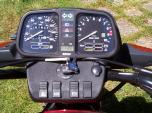

Feb 23, 2001
In June 2000, I bought a 1995 K75/3A, and a review has been a long time coming. So, here it is.
The K75 was the smallest of BMW's new K series of motorcycles, at about 740 cc. It also, coincidentally, produces 75 PS (one PS is equal to 0.9863201 horsepower, so 75 PS is about 74 horsepower in US units). In any case, it was the smallest in the line, and was correspondingly the least expensive. There were several variants, including the K75C, the K75S and the K75RT. The variations basically consisted of different fairings and handlebar setups.
The K75 was last imported to the US in 1995, and was last produced in Germany in 1996 according to various sources. It had various options available, such as ABS, hard bags, etc. The particular bike I have was ordered with ABS, and hard bags were installed after delivery, along with a Parabellum Sport fairing.
As I reported in my K75S review, the K series engine is significantly different from the R series, or boxer, engine. I will expand on that assessment in this review.
Having ridden this bike for 8 months now, I have a fairly concise opinion of the engine. I think it's a wonderful engine, with a few flaws:
That's a pretty short list. Let me explain what I mean.
Too precise feeling: The engine is so well balanced and so smooth that it's kind of boring. There is certainly some vibration if you press your heels against the frame rather than letting the peg rubber take it up. It certainly has its own personality. But it's sort of a "sewing machine" personality -- it just goes and does it well. There's no interesting vibration, no real feel to it. And, I was rather surprised recently when I heard a bike start and said to myself, "that sounds like a K bike!" I turned around, and there stood a random Kawasaki (I say "random" because I can't idenfity Kawasaki's, not to slight the brand). In other words, it sounds like a lot of other motorcycles that are out there. 
Lacking low-end horsepower: This is actually pretty obvious. It's just kind of weak coming off the line -- but watch out when it goes over about 3-4000 RPM. Sure, most engines develop more power at higher revs, but this bike comes out of nowhere and tries to throw you off the saddle. The practical upshot of this is that you need to either keep the tachometer above the 10 o'clock line, or be prepared for performance like your Honda Civic.
My particular bike seems to be emitting a goodly deal of unburnt gasoline in its exhaust, and I need to take it in to have that addressed. It mostly happens in the mornings, and when the bike's cold (a failing temperature sensor might be causing it).
My previous opinion about the K75 driveline remains fairly accurate. The transmission is fairly accurate, albeit a bit notchy and klunky. The smooth, quiet shifts are the exception, not the rule, but I rarely find a false neutral any more.
This is due in part to a technique taught to me by someone on the Airheads mailing list (a list dedicated to older-style Boxer-powered BMWs) -- namely, when upshifting, just hold the shift lever up until the clutch is out rather than bumping it up and letting go. This ensures that even if you don't get the next gear to engage, when you start letting out the clutch, it will engage at that time.
The brakes on this bike are wonderful. This particular bike has dual disks in front, and a single, undrilled disk in back. The rear brake is deceptively strong (deceptive because it feels better to use the rear brake, but that's a bad bad idea in the real world), and the front brakes are fine, but lack bite. The front brakes are actually plenty powerful, but you do have to give them a good squeeze -- this isn't a real stoppie-worthy bike. I suspect that replacing the front pads with something more aggressive would fix this, but it's not a big enough problem that I'm going to worry about it.
The thing that looks like a gear ring in this picture is the ABS sensor wheel. It counts pulses off that ring, and compares the pulses between front and rear wheels -- when they get out of sync, the slower one is getting close to sliding, and the computer kicks in the modulator.
The ABS system is actually quite useful. It's rare that I accidentally engage it (although a combination of overzealous rear brake application and wet pavement brings it in occasionally), but it's very nice to have. On the occasions that I have used it, I've been very glad to have the system working for me. It makes kind of a frightening "chunk! chunk!" noise when it kicks in, but it doesn't push back on the brake control, unlike some cars I've driven. It can be disabled by pressing the ABS switch on the dashboard before driving off.
ABS is one of those features that should be available for every motorcycle. I've heard related a tale of one rider (search for "other hazards") who accidentally got onto a wet lawn, and was able to bring his bike to a safe stop (although with a very long stopping distance) with the aid of the ABS system.
In this day and age, the K75's suspension is nothing special. BMW has already trumped both front and rear with their current production motorcycles, and most modern bikes handle better and with more precision than this bike.
When you take into account that the frame and suspension were designed in the early 80's, though, it's a fine setup (and certainly feels more secure than my old R65 LS).
The dashboard on this bike is great. The normal tach and speedometer are there, along with indicator lights for both turn signals, high beam, neutral, brake light failure, oil, battery and overtemp idiot lights, and a gas light which comes on too early. What's cool (I thought so when I first rode a K bike, and I still think so today) is the fact of a clock and gear indicator. I know neither are new or radical ideas, but they're things that should exist on all motorcycles.
In some recent testing with a GPS receiver, I've discovered that my speedometer is indeed a bit optimistic, but not too much, showing a maximum discrepancy of about 7 MPH at an indicated 90 MPH. It's a bit hard to tell with any accuracy though, since for some asinine reason, this speedometer goes up to 160 MPH. I don't know the last time you rode 160 (which is a good 40 MPH over the rated top speed in any case), but I'd much rather my speedo went to 85 or 100 and had a better resolution at lower speeds. If I ever get above 85 or so, I'm going to care much more about the road than seeing how fast I'm going.
Overall, this is an easy bike to ride. The engine can be a bit tricky, especially when cold (remember, no torque), and it's still not a precise cornering machine, but beyond that it's great.
When the engine has just started, you have to remember to rev it up well before moving, or you will stop abruptly. It's much better when it's warm, but this is still no torque machine. No taking off in idle for this monster (on some of the older airheads, with their low-end torque and huge flywheels, you could, with care, start moving without touching the throttle).
This is also not a V-twin cruiser, and if you want to have any power, you need to rev the engine. However, having done that, you'll be flying with the best of them -- I accidentally lift the wheel off the ground in second gear under good acceleration. Certainly that's nothing compared to a modern pocket rocket, but for a 5 year old Bavarian standard it's nothing to sneeze at.
The handling of the bike is fine for most tasks, but it still feels a bit wobbly going around corners. Maybe it's my tires, maybe I need a new rear shock, I'm not sure. It's the feeling that all's well, but don't push too hard. For almost all my riding, that's just fine. It comports itself well over bumps, and doesn't do anything unexpected.
Created by Ian Johnston. Questions? Please mail me.
{kind=link}